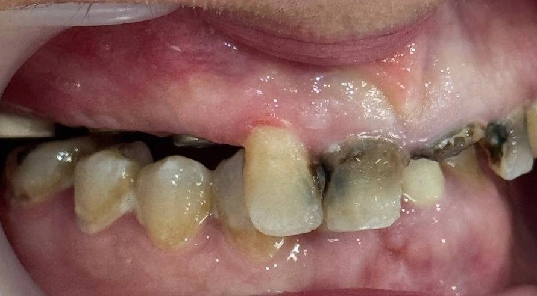

Insight 43 — Reconstructing VD in a Patient Who Has No Posterior Stop: When a Change in Anterior Contact Is a Clue, Not a Problem
Published:
Last reviewed:
فارسی

Clinical explanation
When there is no space, the first question is not how to build — but where the space has gone
- Consider a patient who has lost the posterior teeth and the posterior occlusal stops. When you look at the arch, you see there is not enough space for posterior restorations. The first mental reaction is usually that the VD must be corrected to provide space. But right here, at this very first step, there is a hidden point that, if we pass over it, we will get the next decision wrong.
- When you change the VD, the contact of the anterior teeth is lost. Here it is necessary to distinguish between two different scenarios, because the interpretation of this phenomenon differs in each.
- If the anterior teeth have a worn condition, the loss of contact after increasing the VD is completely expected. In this case, the wear itself has taken the teeth out of their original form, and the lost contact is a natural result of that wear. Here the decision is clear: the teeth must be restored so that they come out of the worn state and the contact is re-established at the new VD.
- But the second scenario is where one can get confused. When the anterior teeth do not have a worn shape and yet increasing the VD changes their relationship and separates them, the first mental reaction is usually «I have ruined the work». Here one must pause. An unconscious assumption lies behind this alarm: that the patient had a normal anterior occlusion before losing the posterior teeth. This assumption is sometimes wrong.
- Just as malocclusions have a considerable prevalence in dentate people, in people who have lost posterior support there can also be a pre-existing malocclusion — a malocclusion that has been hidden under the collapsed bite and now, with the change of VD, reveals itself. This is a point we must keep in mind as a constant factor, so that when the anterior contact looks abnormal — in a tooth that has no sign of wear — we are not confused and do not mistakenly attribute it to our own intervention.
- This rereading changes the decision-making. In this patient, the bite was opened — but not in the sense that we increased the VD; rather, we regained the VD to what we estimate it once was. The distinction between «increasing VD» and «regaining VD» is not just a play on words. When you increase the VD, you are adding to the system something that was not there before. But when you regain it, you are returning the system to a position that clinical estimation says it was once in.
- This patient's final occlusion was something like Class II div 1 — and this was consistent with the picture of the abnormal anterior contact we saw after the regain. That is, what at first seemed a «created disorder» was in fact the revealing of a hidden pattern that had been covered under the collapsed bite.
- The next layer of the decision was the design of the cusp slope. When the occlusion is Class II div 1 and the posterior restorations are to be made at a reconstructed VD, deep cusp slopes can create interferences in lateral movements. For this reason, I told the laboratory not to make the slopes deep — so that I could reconstruct the occlusion in lateral movements without becoming entangled in cuspal interferences.
-
Key point:
When, in a patient with loss of the posterior stop, you regain the VD and see that the contact of the anterior teeth has become abnormal, you must distinguish between two situations. If the teeth are worn, the loss of contact is natural and is solved by restoration. But if the teeth are not worn and yet their relationship has changed, the first interpretation should not be «I have ruined the work». Just as malocclusions are prevalent in the dentate population, in patients without posterior support they can also exist beforehand and be revealed only by regaining the VD. This factor must always be kept in mind so that, at the moment of decision-making, we are not confused. The right decision is not insisting on rebuilding an «ideal occlusion», but accepting the patient's real pattern and designing the restorations — including the cusp slopes — to match that pattern.
The content of this page is intended for the educational use of dentists and dental students.